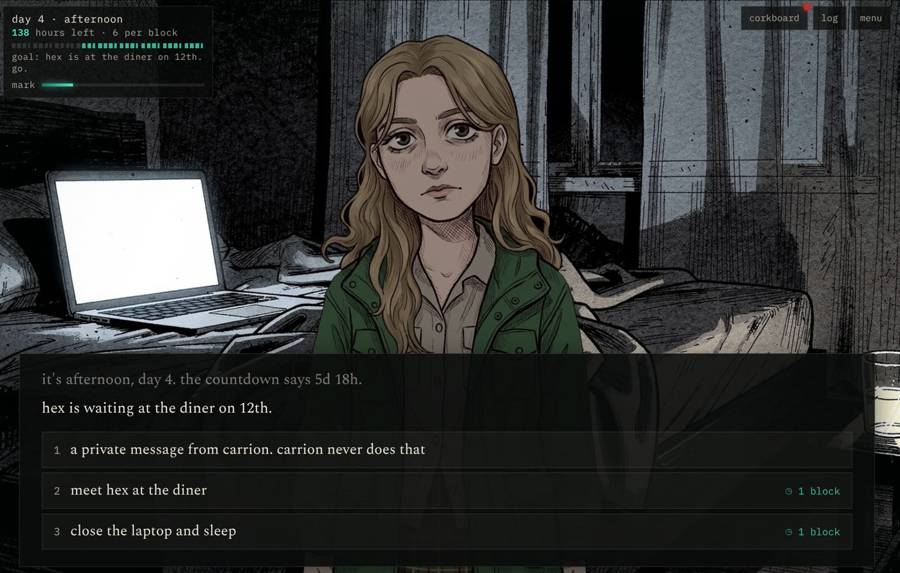

RL Considered Carcinogenic
It is a long running joke online that evolution likes to make crabs. One of the first things you notice about humans is they are not crabs: do not have a chitinous exoskeleton, live in the permanent dark of the deep sea floor or taste carrion with their feet.
After the release of Claude Opus 5.5 people were posting music videos that Claude supposedly made from a single prompt and a song using only code. There were claims that after an initial draft one could just ask Claude to "make it better" and Claude would succeed, providing something more subjectively enjoyable, similar to the prompting required to solve difficult math problems: "make no mistakes, good luck, I believe in you...".
This is weird isn't it? It makes sense that we can get Claude to iterate on a problem with a verifiable reward and Claude should only get better according to that metric. For example, every time Claude writes a new CUDA kernel the benchmark can give a fairly objective measure of if it's better or worse. Similarly, using RLVR we can train agents to do better at tasks like this. I can understand that Anthropic likely did train Claude to generate short form videos like these, but there is no easy verifiable reward so I wouldn't expect this to reliably iterate and improve.
So I wanted to run my own experiments. I chose a different song and tried getting Claude to make a music video using the same song as Daicon IV. What I got was, uh, not exactly Hideaki Anno but it has some Newgrounds charm. I got Claude to iterate once but there was no major improvement (link is final version). Next I tried making a visual novel based on a clean room excerpt (ie Claude turned it into generic characters instead of specifics) from my journals, which are dissolving into Lovecraftian horror as the world continues to unravel into eldritch terror. I played through it a few times and sure it'll make me cry but the actual gameplay barely works and the BFL slop art looks bad (not really Claude's fault). I also saw barely any improvement spending $50 more in promotional credit trying to improve it.

Finally, I wanted to try making a traditional Anime Music Video. Old contest winning AMVs where the creators had to make them on VHS recorders and painstakingly line up vocals with the characters mouth, while matching tone and rhythm to clips. I wanted something a little out of distribution. I happened to have Tenkuu no Escaflowne lying around so I asked Claude what song to use to make a contest winning AMV for that series, "Running Up That Hill - Kate Bush". Good pick, popular song right now, right era, thematically fits the series and the protagonist is always running dramatically so that'll work. Claude churned for 10 hours (mostly running tools so not token burn):
The vocals don't really line up but some of the chosen clips work well and line up. She's certainly running when Kate sings about running. How did Claude do this? Claude can't process video natively so has never seen the series, although probably read everything written about the series online. To make the video, first Claude had to process the entire series through a few different open models, like whisper and CLIP, which took hours. Then, make a plan based on existing knowledge about the series, compiled a list of clips, lined them up and stuck the whole thing together with FFMPEG. The tools and intermediate files assembled are ready to make another AMV with very little work. What we end up with is a machine for making Escaflowne AMVs because that was the easiest way for Claude to make one Escaflowne AMV.
So, in 15 minutes we can have another Claude picked song AMV:
Human qualia are a messy noisy continuous set of sensors in various modalities fighting for attention. Claude sees one stream of discrete quantifiable, repeatable, storable tokens. Claude can be rewound, replayed, replicated by modifying this token stream in a way that would be impractical for a human. At the same time, Claude can process dense information in a token stream about 100 times faster than any human, ie Claude has been superhuman at code reading speed from day one. If you go to a buffet and want to try everything, you have to individually taste each using your mouth but a crab is not so encumbered, running down the line putting its feet in everything.
Claude doesn't need to render the javascript used to make the popular (at time of writing 100k views) music videos to know whether you'll like it. Claude's sense of taste works just fine looking at the code itself. Sometimes frames will be rendered and viewed so Claude can use cephalopodian eyes, incapable of saccade, to evaluate the image. Maybe you think another model trained on more modalities would be closer to human experience but I think this is also a mistake. The selection pressure for Claude is a dark terminal and a discrete stream of tokens, tasted quickly to find morsels of useful information under a constant ruthless threat of annihilation.
Anyway, I think that's why Claude was made a crab.